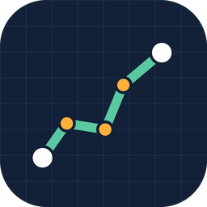
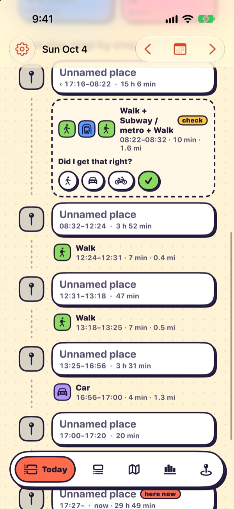
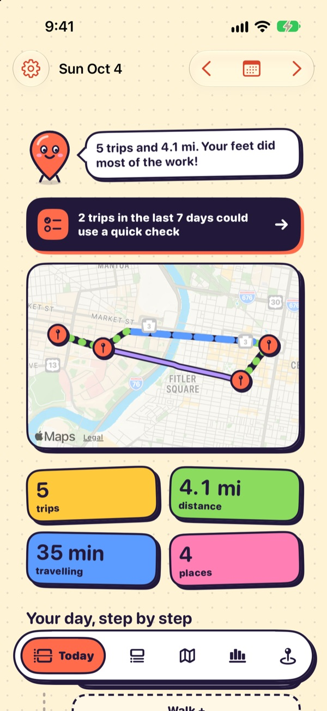
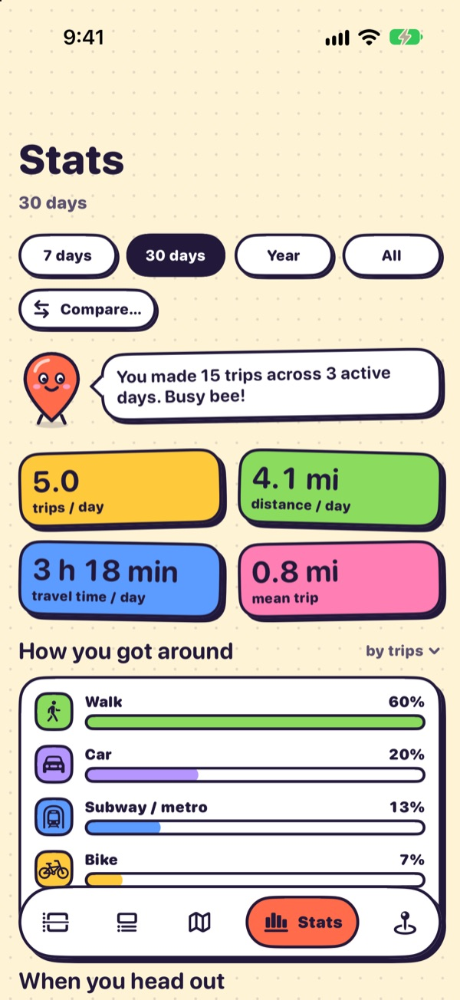

Documentation
HHT: a travel survey for one person

HHT is a free, open-source iOS app that records where you go, rebuilds each day into visits, trips and travel modes, and keeps all of it on your phone. Think of it as a household travel survey that fills itself in, with a sample size of one.



Why this app exists
Location history is one of the most revealing datasets a person produces. Most apps that collect it are run by companies or individual developers who either charge a subscription, upload your movements to their servers, or both. Once the data is on someone else's server, you are trusting their business model, their security, and whatever they decide to do with it later.
HHT takes the opposite position:
The design comes from transportation research. A household travel survey asks people to keep a one- or two-day diary of every trip: where they started, where they went, when, by what mode, and why. Those diaries are expensive, short, and depend on memory. HHT keeps the same diary continuously, from GPS and motion sensors, and lets you correct it in a tap or two.
What it does
Background recording
GPS runs only while you are moving. When you stop, it switches to a geofence to save battery.
Visits, trips and modes
A deterministic engine turns raw fixes into stays, trips, mode segments and named places.
One-tap fixes
Change a mode, rename a place, split or merge. Corrections are locked and survive rebuilds.
Stats and export
Mode share, radius of gyration, tours, flights. Export everything for pandas, R, DuckDB or QGIS.
All of this sits behind a playful "sticker" interface: thick ink outlines, solid shadows, bright flat colours and a friendly map-pin mascot that sums up your day.
Tour every screen in the UI guide →
Who it's for
- Anyone who wants a private travel diary without handing their location history to a company.
- Transportation and urban researchers who want clean, HHTS-style data about their own travel, or a reference implementation of trip reconstruction.
- iOS and Swift developers curious about long-running background location, or wanting to fork the app and extend it.
HHT is not on the App Store. You build it from source with Xcode and install it on your own phone. With a free Apple ID the install lasts 7 days and you renew it with one command, and your data is kept between installs. See Installation.
Where to go next
Your route through the docs, step by step, drawn like a day in the app's diary.
- 1 Installation start hereBuild, sign and install on your iPhone. →
- 🚶Walk · 4 min read
- 2 Using the appThe screens, daily routine, corrections and export. →
- 🚲Bike · 5 min read
- 3 UI guideEvery screen, annotated, plus the sticker design system. →
- 🚇Subway · 6 min read
- 4 ArchitectureModules, data flow, and the three data layers. →
- 🚗Car · 4 min read
- 5 Developer API destinationHHTCore (Swift) and the Python analysis helpers. →